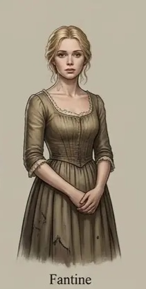
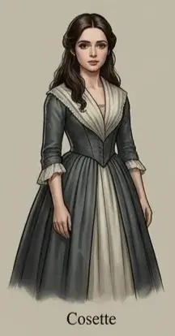

Explore / Society, Family & Human Experience
Les Misérables
by Victor Hugo
ClassicEnglish
In 19th-century France, Jean Valjean, an ex-convict seeking redemption, is pursued for decades by the ruthless inspector Javert. Along his journey, he touches the lives of the tragic Fantine, her daughter Cosette, and the young revolutionary Marius.
15 chapters. Illustrated adaptation in 15 chapters.
Table of Contents
- 1 The Prisoner's Return
- 2 The Bishop's Mercy
- 3 The Birth of a New Man
- 4 Fantine's Broken Dreams
- 5 The Mayor's Secret
- 6 The Trial of Conscience
- 7 Fantine's Final Hope
- 8 The Little Prisoner
- 9 A Father and His Daughter
- 10 The Shadows of Paris
- 11 The Heart of Marius
- 12 Love in the Time of Revolution
- 13 The Barricades of Paris
- 14 The Inspector's Dilemma
- 15 Redemption and Peace
Dramatis Personae
- Jean Valjean Ex-convict seeking redemption, later Mayor Madeleine
- Inspector Javert Rigid police inspector obsessed with the law
-

Fantine A tragic mother forced into poverty for her child -

Cosette Fantine's daughter, adopted by Jean Valjean - Marius Pontmercy Young revolutionary student in love with Cosette
- Bishop Myriel The compassionate bishop of Digne
- The Thénardiers Greedy and malicious innkeepers
Chapters here are formatted for reading convenience from the authoritative edition.